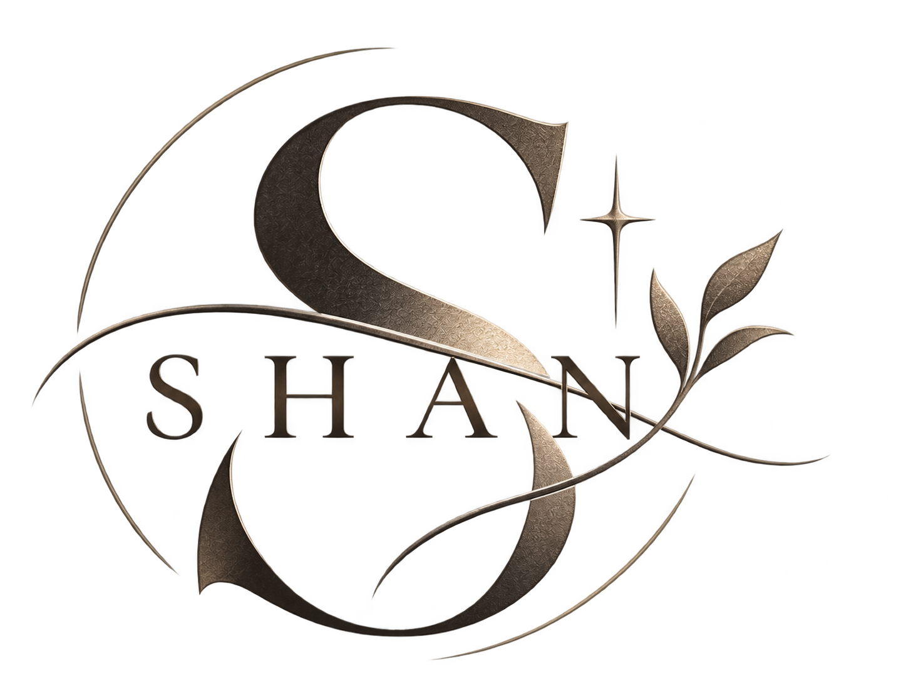

視界未眠01 / ABOUT
關於我
我是 Shan，具廣告設計背景，目前持續學習網頁設計、介面設計與原創印花創作，並以 SHAN CREATIVE 累積個人作品。
擅長 Illustrator（向量繪圖）、Photoshop（影像編輯）、Figma（介面設計），以及 HTML（網頁結構）、CSS（樣式設計）與 JavaScript（互動程式）。
希望將視覺設計經驗與數位工具結合，讓每件作品兼具美感、故事與清楚的使用體驗。
02 / SELECTED WORKS
設計作品
每一件作品，都是視覺與故事的交會。
作品類型
平面設計・原創作品・網頁設計
⌑尚無作品
未來新增此類作品後，將自動顯示在這裡。
03 / LEARNING JOURNAL
課堂學習日誌
集中記錄每堂課的日期、使用工具、學習內容、作品圖片與練習心得。
從課堂練習到實作成果，記錄每天學會的技巧與下一步改進方向。